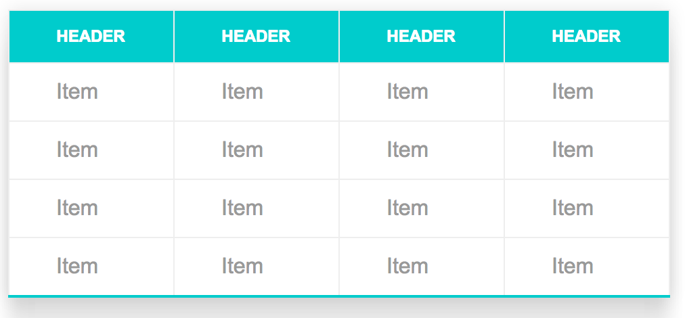

Links, Lists and Tables
Posted by Robert Padar- Working With Lists - Using Navigation Bars - Working With Tables Part1 - Working With Tables Part2
Working With Lists
Lists are powerful tools used to group together similar elements and give site visitors an easy way to view groups of information
Also to demonstare how we have to code lists in other list
- Lists can be created for just about any type of content
- Lists use at least two components:
- -A markup element that tells the browser a list is on the way
- -A markup element that tells the browser this particular item goes into a list
- Three types of lists:
- -Ordered lists
- -Unordered lists
- -Definition lists
- All list types can be styled using CSS3
The method for styling list is the list-style-type property which allows you to set the item markers for your list
Item markers refer to the characters which are used to delineate list items
Bullets for an unordered list by default
Numbers for an ordered list by default
Using the list-style property for ordered list can select the following values:
Also to demonstare how we have to use lists in code
- Lower-roman - (i, ii, iii)
- Upper-roman - (I, II, II)
- Decimal - default
- Decimal-leading-zero - the number with a leading zero
- Lower-alpha
- Lower-greek
- Upper-alpha
Using the list-style-type property for unordered lists allows you to specify the particular shape or symbol that you want to use as a bullet
The default marker is a disc (filled circle)
Other options:
-Square
-Circle
In addition you can disable the marker entirely using the list-style-type property with a value of none
An additional option if you do not desire any of the additional list markers is to use an image of your own as the marker
You can use the list-style-image property to specify the url of the image that you would like to use:
list-style-image: url('myBullet.gif');
The list-style-position property is used to specify whether the list item markers should appear inside or outside the content flow:
-Two values are "inside" and "outside"
By default list items are outside and there is a certain amount of indentation
If this is modified and set to inside the item markers are displayed after the indentation which simply results in more indentation
Using Navigation Bars
Navigation bars are commonly created as a combination of lists and links and are used to navigate to different areas of a specific website
The invidual items in a navigation bar are simply hyperlinks that use a relative link
Links can be styled using all of the styles discussed thus far:
-Colors
-Backgrounds
-Pseudo classes
The first step to creating a navigation bar is to create an unordered list of items for the menu and make those items hyperlinks to other pages
Typically you would then use the list-style-type: none; declaration to remove the default bullet points
Next you would style the bullet points
Then style the hyperlinks
Finally for horizontal navigation bars you would use the float:left property
Example:
Working With Tables
HTML tables are a great way to arrange items in a gird format when it makes sense to do so but they aren't very attractive by default
Limited styling exists within HTML for tables and shouldn't be used anyway but CSS is very capable of creating good looking tables
The first set of properties to consider:
-Borders
-Padding
-Margins
Tables and table cells follow the same CSS box model as other elements and thus can be styled using those properties
Tables are defined using (table)
Rows are defined with (tr)
Heading (th)
Individual cells (td)
Margins are ignored for (th) and (td):
-Cannot specify spacing between cells
-A small gap exists by default
-Use border-collapse:collapse on (table) to create only a single border
Tables in HTML are Great
| First name | Last name | Age |
| Patric | Loner | 38 |
|---|---|---|
| Donald | Clark | 41 |
| Alicia | Lambert | 27 |
| Peter | Patric | 14 |
The width and height of the table can be configured using those properties:
-Values are given using pixels or percentages
-Table {width: 100%; height: 500px}
-These values can also be set for (tr), (th) or(td)
-You can set the width property for the invidual table cells represented by the (th) or (td) elements
-Classes and IDs can be used in order to apply special styling to invidual cells or to groups of cells:
-(td class="FirstColumn")FirstName
Text within the tables is able to be aligned eighter horizontally or vertically
Horizontal alignment is achieved using the text-align property:
-Center
-Left
-Right
-Justify
Vertical alignment is achieved using the vertical-align property:
-Top
-Middle
-Bottom
The tables can also be styled using properties for background, font and text just like other elements on the web page:
-Color
-Background-color
In additional a special selector can be helpful when dealing with larger tables that are harder to read:
-One option is to color alternating rows
-Easily achived using the nth-child selector